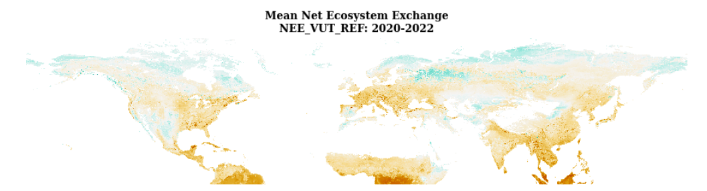
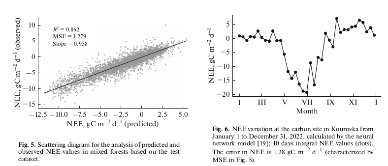
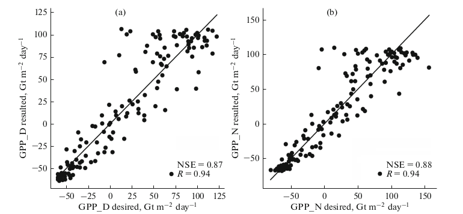

Aleksei Rozanov
Research Assistant
Real-time GeoInformation Systems Lab,
University of Minnesota, USA

rozan012@umn.edu
CVResearcher&Developer&Activator
🤓Interests:
- Machine Learning & AI
- Multi/Hyperspectral Remote Sensing Imagery
- Geospatial Data
- Carbon Fluxes & Carbon Markets
🔎Affiliations:
- Research Assistant, 2024-present, Real-time GeoInformation Systems Lab, University of Minnesota
- Private Consultant, 01.2024-08.2024, Online
- Research Assistant, 05.2021-08.2024, Climate and Environmental Physics Lab, Ural Federal University
- Teaching Assistant, 07.2023 and 07.2024, Climatematch Academy, Online
🎓Education:
- M.S. GIS, 2024-2026, University of Minnesota, Twin Cities, MN, USA
- M.S. Big Data and Machine Learning, 2022-2024, ITMO University, Saint Petersburg, Russia
- B.S. Hydrometeorology, 2018-2022, Ural Federal University, Yekaterinburg, Russia
📚Publications:
-

-
Rozanov A., and Gribanov K., "NorthFlux: Upscaling carbon fluxes in the northern hemisphere using an ensemble of regression machine learning models", Advances in Statistical Climatology, Meteorology and Oceanography (under review)

-
Rozanov, A. P., et al. "Estimates of Carbon Dioxide Flux into the Forest Ecosystem Based on Results of Ground- Based Hyperspectral Sounding of the Atmosphere and an Artificial Neural Network Model." Atmospheric and Oceanic Optics 37.2 (2024): 199-204.
Read

-
Rozanov, A. P., and K. G. Gribanov. "A neural network model for estimating carbon fluxes in forest ecosystems from remote sensing data." Atmospheric and Oceanic Optics 36.4 (2023): 323-328.
Read
Theme by Steve Smith